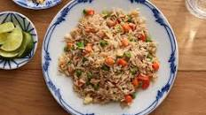

Fried Rice

What is Fried Rice?
Fried rice is a Chinese dish using cooked rice, vegetable,
protein, soy sauce, and aromatics. The ingreidents are stir-fried
in a large work for more flavour. The rice is using leftover rice from the fridge
Ingredients
- 2 tablespoons vegetable oil
- 1 clove of minced garlic
- 2 large eggs
- 3 cups of refrigerated leftover rice
- 1 tablespoon of soy sauce
- 2 teaspoons sesame oil
Steps
- Heat a wok over high heat
- Add the eggs and stir quickly to scramble eggs
- Add the rice and stir
- Add soy sauce and toss rice to coat evenly
- Drizzle the sesame oil and toss again
- Serve hot and enjoy!